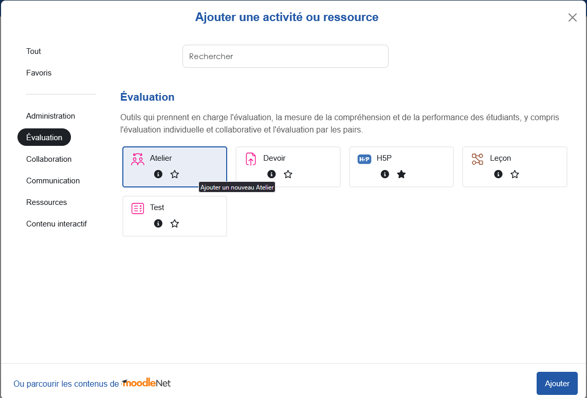
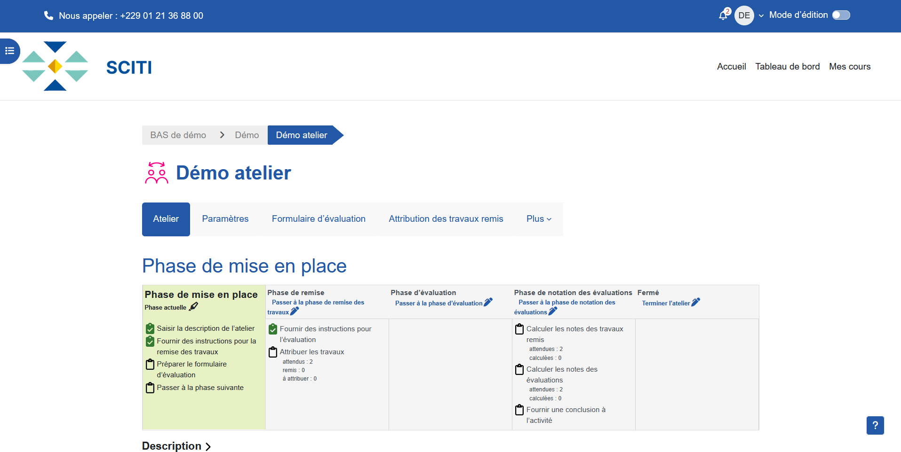

0 phase sur 5 terminée | progression enregistrée uniquement dans ce navigateur.
Configurer
Mise en place
Objectif pédagogique : rendre la tâche, les critères et le calendrier cohérents et compréhensibles.
Prépare la consigne, crée l’activité et teste le formulaire.
Peut lire la présentation, mais ne dépose ni n’évalue encore.
Consignes, dates et formulaire sont prêts ; le test est concluant.
1.1 Préparer les quatre éléments réutilisés dans Moodle
- Objectif : appliquer trois critères pour analyser et améliorer une note argumentée.
- Production : 500 mots, une position explicite, deux éléments probants, dépôt PDF.
- Retour : un élément observé et une amélioration par critère ; un point fort et une priorité.
- Calendrier : 7 jours de production, 4 jours d’évaluation, puis un bilan.
1.2 Ajouter l’activité
- Ouvrez le cours et activez le Mode d’édition.
- Cliquez sur Ajouter une activité ou ressource.
- Dans Moodle 5.1, ouvrez Évaluation, sélectionnez Atelier, puis Ajouter.
- Nommez l’activité « Évaluation par les pairs — note d’analyse ».

Description courte prête à adapter
Déposez votre note, évaluez trois travaux avec la grille, puis consultez les retours reçus après la fermeture de l’Atelier.
1.3 Régler les notes et la stratégie
Dans Réglages d’évaluation, choisissez .
- : 80.
- : 20.
- Décimales : 0.
Moodle produit donc deux résultats : la qualité du travail reçu et la qualité de l’évaluation fournie. La seconde repose sur la comparaison entre évaluations ; elle demande une lecture prudente en cas d’écart.
Autres stratégies possibles
Commentaires convient à un exercice sans note numérique. Grille d’évaluation propose des niveaux descriptifs par critère, mais demande plus de préparation. Nombre d’erreurs vérifie une série d’affirmations.
À décider maintenant
La stratégie ne peut plus être changée après l’entrée en phase de remise. Prévisualisez le formulaire avant d’ouvrir.
1.4 Configurer la remise et l’évaluation
Dans Réglages de remise des travaux, autorisez un fichier, limitez à un PDF et à un seul fichier. Collez une consigne qui annonce aussi la lecture par les pairs.
Consigne de remise
Déposez un PDF de 500 mots maximum. Formulez une position explicite et mobilisez au moins deux éléments du cours. N’inscrivez pas de donnée personnelle sensible. Le fichier pourra être lu par trois étudiants du groupe.
Dans Réglages de l’évaluation, demandez une observation précise et une proposition réalisable pour chaque critère. Activez le commentaire global.
Consigne d’évaluation
Lisez le travail une première fois sans noter. Relisez-le avec les trois critères. Justifiez chaque note par un élément précis. Terminez par un point fort et une amélioration prioritaire. Évaluez le travail, jamais la personne.
Anonymat et auto-évaluation
L’ dépend des permissions « voir le nom de l’auteur » et « voir le nom de l’évaluateur ». Demandez au support local de les vérifier ; un nom écrit dans le fichier reste visible. Pour ce premier scénario, laissez l’ désactivée.
1.5 Fixer les dates sans automatiser la bascule
Dans Disponibilité, activez l’ouverture et la date limite des remises, puis celles des évaluations. Pour un premier essai, changez les phases manuellement après vérification. La bascule automatique dépend d’une tâche technique planifiée et n’ouvre ni la première phase ni la fermeture finale.
1.6 Construire et tester le formulaire
Dans le planificateur, cliquez sur Préparer le formulaire d’évaluation.
| Critère | Question au pair | Maximum | Commentaire attendu |
|---|---|---|---|
| Position | Répond-elle clairement à la question ? | 10 | Citez la phrase centrale et proposez une précision. |
| Argumentation | Les raisons sont-elles étayées ? | 10 | Repérez un appui efficace et une liaison à renforcer. |
| Clarté | Le cheminement est-il facile à suivre ? | 10 | Indiquez une force et une transition à améliorer. |
- Créez trois critères de même poids.
- Activez un commentaire pour chacun.
- Enregistrez et prévisualisez.
- Vérifiez que les notes sont sélectionnables et les formulations sans ambiguïté.
Ajouter un entraînement de calibration
La consiste à fournir un travail exemple et votre évaluation de référence. Les étudiants l’évaluent avant les travaux réels. Cet entraînement aide à discuter les critères et n’entre pas dans la note d’évaluation.
Piloter
Remise des travaux
Objectif pédagogique : obtenir des productions exploitables tout en préparant une attribution équitable.
Ouvre les dépôts, suit les absents et attribue les travaux.
Lit la consigne, dépose son PDF et vérifie son dépôt.
Les remises sont stabilisées et chaque évaluateur a trois travaux.
2.1 Ouvrir et suivre les remises
Dans le planificateur, cliquez sur Passer à la phase de remise des travaux, puis confirmez.

Annonce d’ouverture
La phase de remise est ouverte jusqu’au [date, heure]. Ouvrez l’Atelier puis cliquez sur Ajouter un travail. Vérifiez que votre fichier apparaît bien avant de quitter la page.
- repérez les non-remettants dans le rapport ;
- contrôlez les formats et les données sensibles visibles ;
- envoyez un rappel 24 à 48 heures avant l’échéance ;
- attendez que la liste soit stable avant l’attribution définitive.
2.2 Attribuer trois travaux par étudiant
- Après l’échéance, ouvrez Attribution des travaux remis.
- Choisissez .
- Réglez 3 évaluations par évaluateur ou l’équivalent proposé.
- Lancez l’attribution, puis contrôlez le tableau : aucun travail sans évaluateur et aucune charge excessive.
Trois avis donnent une base plus informative que deux lorsque les notes divergent. Cela n’élimine pas le besoin de .
Retards et étudiants sans remise
Une remise ajoutée après l’attribution n’est pas forcément allouée. Attribuez-la manuellement ou relancez avec prudence. Pour ce scénario, un étudiant sans remise peut encore évaluer afin de préserver l’apprentissage du feedback.
Piloter
Évaluation par les pairs
Objectif pédagogique : faire comparer, justifier et formuler un retour orienté vers l’amélioration.
Ouvre la phase, suit l’avancement et intervient sur les retours problématiques.
Évalue trois productions avec le même formulaire.
Les évaluations attendues sont terminées ou les exceptions sont identifiées.
3.1 Ouvrir et annoncer la phase
Revenez à l’onglet Atelier, cliquez sur Passer à la phase d’évaluation, puis confirmez.
Annonce aux étudiants
Trois travaux vous sont attribués. Pour chacun, ouvrez le fichier puis cliquez sur Évaluer. Renseignez toutes les notes et tous les commentaires avant le [date, heure]. Les auteurs verront vos retours après la fermeture de l’Atelier.
3.2 Suivre sans reprendre tout le travail
Ouvre un travail, clique sur Évaluer, complète le formulaire, enregistre et recommence.
Suit les évaluations attendues et terminées, les accès aux fichiers et les commentaires incomplets.
Relance de façon ciblée ; modère un retour agressif, personnel ou vide selon la procédure locale.
Repérez aussi les notes très dispersées : elles seront examinées dans la phase suivante. Ne concluez pas encore qu’un évaluateur a tort.
Piloter
Notation des évaluations
Objectif pédagogique : contrôler la cohérence des résultats, modérer les cas atypiques et préparer une synthèse.
Calcule, lit les écarts, modère et rédige la conclusion.
N’évalue plus ; les résultats définitifs ne sont pas encore libérés.
Les notes sont calculées, les écarts lus et les incidents traités.
4.1 Calculer puis contrôler
- Passez à la phase de notation des évaluations.
- Choisissez un niveau intermédiaire pour la .
- Cliquez sur Recalculer les notes ou l’action équivalente.
- Repérez les travaux aux avis très dispersés et les notes d’évaluation inhabituellement basses.
- Lisez les commentaires avant toute correction. Si nécessaire, ajoutez votre propre évaluation avec un poids supérieur ou ajustez une note en gardant une justification.
- Rédigez la conclusion de l’activité : tendances, conseils et prochaine action.
Bien interpréter la note d’évaluation
Elle exprime surtout la proximité des réponses avec la meilleure approximation du consensus. Un avis minoritaire peut être argumenté et utile. La valeur numérique sert de signal ; le contenu du retour reste à lire.
Publier quelques travaux
Vous pouvez marquer des travaux comme publiés pour les montrer après fermeture. Annoncez cet usage en amont et demandez l’accord de l’auteur si la diffusion dépasse le cadre prévu.
Exploiter
Fermé
Objectif pédagogique : rendre les retours lisibles et les transformer en décisions pour un prochain travail.
Ferme l’activité, communique le résultat et anime le bilan.
Consulte les retours reçus et formule un plan d’amélioration.
Chaque étudiant choisit au moins une modification transférable.
5.1 Fermer et libérer les résultats
- Vérifiez les calculs et les cas litigieux.
- Cliquez sur Terminer l’Atelier ou passez à Fermé.
- Les deux composantes sont transmises au et les étudiants peuvent consulter les évaluations reçues.
- Envoyez une consigne précise pour retrouver et utiliser ces retours.
Consigne de clôture
Ouvrez l’Atelier, retrouvez Votre travail remis et cliquez sur son titre. Relevez un accord entre pairs, un désaccord à examiner et deux modifications que vous retiendrez. Déposez ce plan dans [espace prévu].
5.2 Exploiter les retours en 15 minutes
- Rappelez que les retours sont des informations à examiner.
- Présentez deux forces et deux difficultés récurrentes sans identifier les auteurs.
- Discutez un écart d’interprétation d’un critère.
- Faites écrire une action de transfert vers le prochain travail.